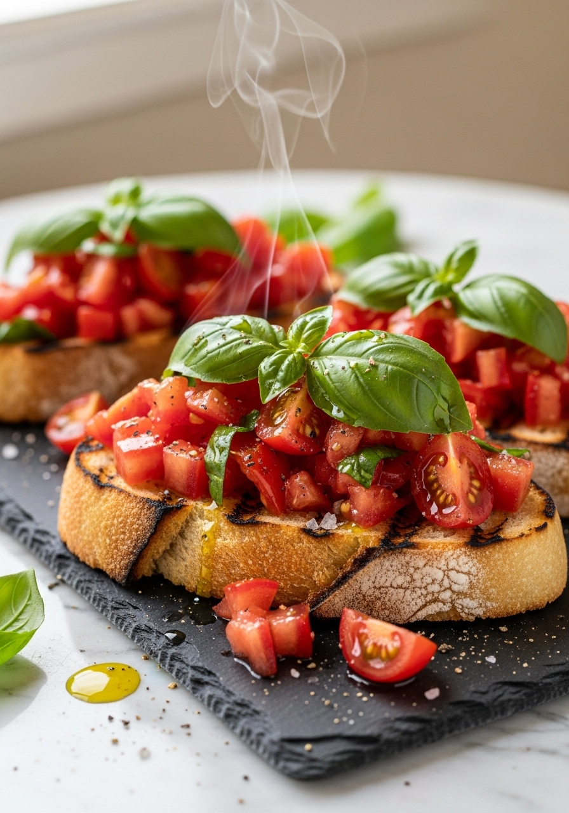
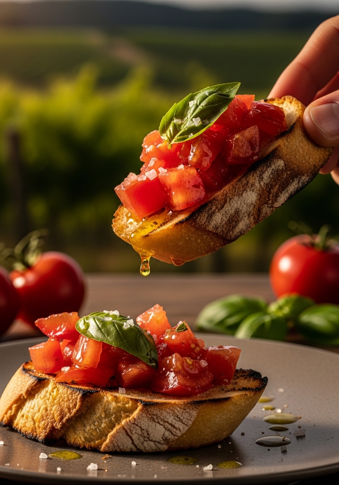

La bruschetta al pomodoro è la prova che la cucina italiana è superiore non per complessità ma per qualità degli ingredienti. È pane, pomodoro, aglio, olio e basilico. Cinque ingredienti. Ma quando il pane è casereccio tostato sulla griglia fino a diventare croccante e profumato di fumo, quando il pomodoro è maturo al punto giusto e condito con il sale che lo fa rilasciare il suo succo dolce, quando l'aglio sfrega il pane caldo e si scioglie nel calore della mollica, quando l'olio extravergine è fruttato e il basilico fresco — la bruschetta diventa qualcosa di memorabile. La differenza tra una bruschetta mediocre e una perfetta è solo questo: ingredienti di qualità.

15 MinSi pronuncia 'bru-SKET-ta' — non 'bru-SHET-ta'. Il CH in italiano è sempre duro (come in 'schema'), non morbido come in inglese. La bruschetta nasce nel Lazio e in Umbria come piatto contadino: il pane raffermo veniva tostato sul fuoco, strofinato con aglio, condito con olio extravergine d'oliva nuovo (la bruschetta era tradizionalmente il modo dei frantoi oleari di assaggiare l'olio appena prodotto) e sale. Il pomodoro è stato aggiunto successivamente, dopo l'arrivo del pomodoro in Italia. La versione con pomodoro fresco è quella oggi più diffusa nel mondo, ma la bruschetta originale è semplicemente pane, aglio e olio — la migliore merenda rurale italiana.
Il pane per la bruschetta deve essere: a mollica densa (non ariosa come la ciabatta), con crosta resistente, non fresco di giornata (il pane leggermente raffermo regge meglio la tostatura e il condimento). Il pane di Altamura di semola rimacinata (Puglia) è considerato ideale. Il pane casereccio umbro o laziale è la scelta tradizionale. La baguette francese è troppo ariosa — la bruschetta diventa molle in secondi. Il pane a cassetta è assolutamente sbagliato. Se non trovi pane casereccio, usa una pagnotta rustica a lievitazione naturale: la crosta resistente e la mollica compatta sono le caratteristiche fondamentali.
Ingredienti
Procedimento

La bruschetta al pomodoro è la versione più famosa, ma in Italia si fa la bruschetta con tutto. Bruschetta con ricotta e fichi (Umbria). Bruschetta con nduja e stracciatella (Calabria). Bruschetta con lardo di Colonnata e miele (Toscana). Bruschetta con funghi porcini trifolati (Toscana, autunno). Bruschetta bianca, solo aglio e olio, è la versione più antica e in molte regioni la preferita. Per i vegetariani: bruschetta con pesto di rucola e noci. Per chi vuole più sostanza: bruschetta con fagioli cannellini, salvia e olio — un piatto quasi completo. La base — pane tostato, aglio, olio buono — rimane sempre la stessa.
Si pronuncia 'bru-SKET-ta' con il CH duro italiano, come in 'schema' o 'scheda'. Non 'bru-SHET-ta' come spesso si sente fuori dall'Italia. Il termine deriva dal verbo dialettale romano 'bruscare' (abbrustolire) e dall'umbro 'bruscato' (bruciacchiato).
L'aglio viene strofinato crudo direttamente sul pane caldo appena tostato — non viene cotto a parte. Questo è il metodo tradizionale: il calore del pane 'cuoce' leggermente l'aglio sulla superficie, lasciando il sapore senza la pungenza dell'aglio completamente crudo. Non aggiungere mai aglio crudo tritato sopra la bruschetta: sarebbe troppo aggressivo.
No — la bruschetta va consumata immediatamente. Il pomodoro condito rilascia liquidi che ammollano il pane in pochi minuti. Puoi preparare il condimento di pomodoro in anticipo (si conserva 30-60 minuti), tostare il pane all'ultimo momento, assemblare e servire subito. Non lasciare riposare la bruschetta già assemblata.
La griglia è preferita perché dà i segni di bruciacchiato caratteristici e il sapore affumicato. Il tostapane va bene per uso quotidiano. Il forno (grill/broiler) funziona per grandi quantità. Non usare il microonde: il pane diventa gommoso invece di croccante.
Pomodori carnosi e poco acquosi: i San Marzano, i pomodori Roma, i cuore di bue o i ciliegini misti dolci. Usali a temperatura ambiente, mai freddi di frigo. In estate, qualsiasi pomodoro maturo di campo è eccellente. In inverno, i pomodorini ciliegini o i datterini sono i più saporiti tra quelli disponibili.